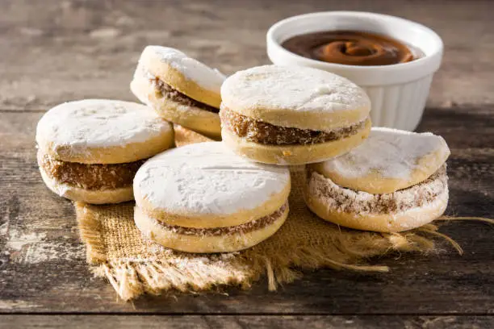
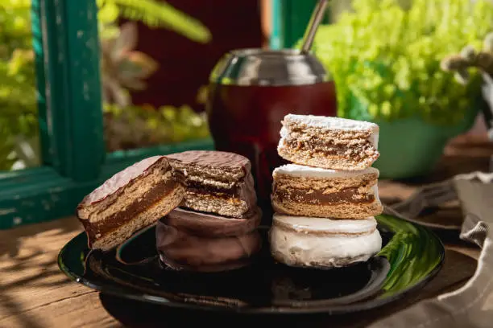
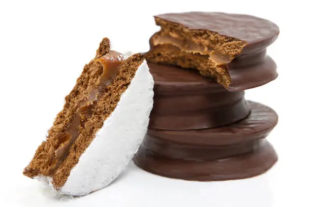

Feria Gastronómica de Lima Norte
📍 Lugar: Parque de la Exposición
🗓️ Fecha: 1 al 3 de Diciembre

Mención en Revista Gourmet Peruana
📍 Lugar: Parque de la Exposición
🗓️ Fecha: 1 al 3 de Diciembre

Nuevo Punto de Venta en Surquillo
📍 Lugar: Parque de la Exposición
🗓️ Fecha: 1 al 3 de Diciembre
❮
❯